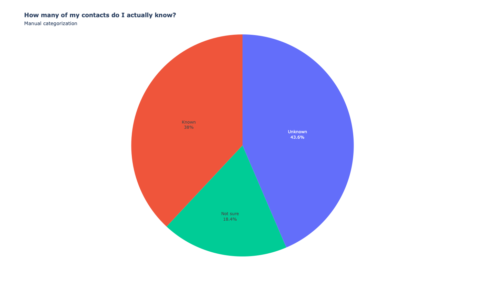
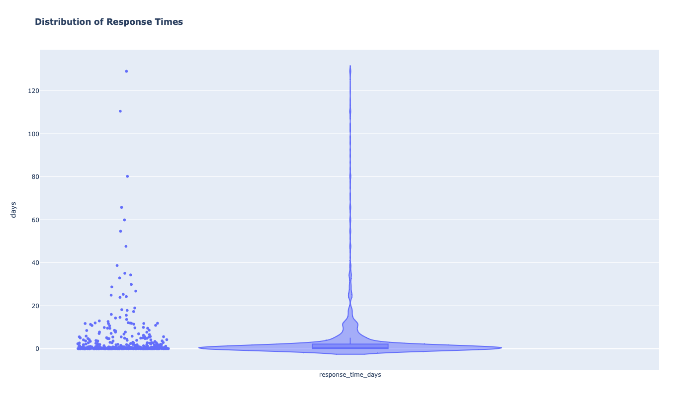

Should auld acquaintance be forgot…
TL;DR
- I sent over 500 Christmas and New Year’s messages last December to people in my LinkedIn network and received over 400 responses.
- LinkedIn’s tools didn’t make it easy.
- I would have sent more but for a tragic event that sent my reachouts in a different direction.
- I had many great responses and overall I felt it was very much worth the effort.
Backstory
A few days before Christmas last year, I got a LinkedIn message from a former colleague wishing me a happy holiday season. This was not someone I knew particularly well - I had only interacted with him a few times - but I appreciated his reaching out to me. It got me thinking I should do the same to my network and just send a simple season’s greetings message to people who I had not interacted with for a while.
Strong Ties, Weak Ties and No Ties
Now, LinkedIn gets a lot of criticism but the one thing I find it’s good for is keeping in touch with people that you have “weak ties” with, in particular former colleagues. I communicate with close friends (my “strong ties”) by calling or messaging them directly, but I typically don’t want to fill up my address book with contact details of people I worked with twenty years ago. Just trying to keep the details up to date would be a major effort. Instead I rely on LinkedIn to keep us connected.
The problem for me though was that mixed in with those strong and weak ties were a very large amount of “no ties” - people who had asked to be added to my network but never communicated with me again. There were a lot of those, and I wanted to focus on the people in my network that I actually knew. I quickly figured out that trying to work through my network using the LinkedIn website was a waste of time. The sorting and filtering tools are rudimentary and paging through the list of connections was slow and frustrating, especially if you had to start again from the beginning if the page refreshed for some reason.
Instead I used the facility LinkedIn provides to download your data to get a list of my contacts in CSV format. I loaded these into Excel and annotated them into Known, Unknown and Not Sure.

Message(s) in a bottle
After this I went about sending an individualized message to each person in the “Known” category, filtering out those who I would typically contact by some means other than LinkedIn. There is no (easy) way to do this programmatically (which is probably a good thing!) so I created a few different template messages - e.g. one for people in the US referencing “Happy Holidays”, one for those in the UK referencing “Merry Christmas and Happy New Year” etc. I then went one by one through my spreadsheet, creating a new message for each person, copying in the template text and customizing it, sending and finally marking that person as contacted on the spreadsheet.
This took some time. Between December 22 and December 27 I sent 538 messages.
Then something happened that took the wind from my sails.
An unexpected and sad event
I did have a morbid thought as I was sending out these messages, especially regarding those I had not been in touch with for many years: “I hope everyone is still alive”.
This background worry became shockingly true on December 28th, when I received an email from a mutual friend that my friend and boss for many years and across multiple companies, Andy Bishop, had passed away unexpectedly in his sleep over Christmas. He was the same age as me (within a few months) and had retired early to spend time with his family in Cornwall, far from the stress of life in London. I could write many pages on what a great guy Andy was and how much he will be missed by all those whom he interacted with. Instead let me direct you to a memorial page created by his colleagues at BP.
At that point I lost my appetite for sending out further season’s greetings and instead decided to leverage my contact list to pass on the sad news to everyone who I knew that had also worked with Andy. We had worked together at JP Morgan, Cygnifi and Bank of America so that list was over 100 people.
Responses
Out of the 538 season’s greetings messages I sent (actually 539 as I did send one more on New Year’s Day) I received responses to 459 of them. 350 of the responses came back within 3 days but I was still getting replies over 3 months later!

There were a few kurt “Thanks” responses but many people seemed genuinely happy to get my message and many of their responses put a smile on my face. Only one person (my very first manager at JP Morgan) was curious enough to ask what had prompted me to reach out after so many years.
Some sample responses:
“Wow blast from the past. Wonderful to hear from you. Hope you are well and have a great holidays!”
“Hi Mahmood, it is lovely to hear from you and all the best Xmas wishes to you and your family”
“Thanks Mahmood. Very kind of you to send the message.”
“Wow nice to hear from you! Happy Holidays to you too! 👍👍”
“Thanks for thinking of me, and sending a short note! Happy Holidays to you and your family!”
“Hey - how lovely to hear from you! Best wishes to all Hanifs too!”
“Lovely to hear from you, Mahmood! All is well, thank you, hope the same for you and yours, and that you all have a peaceful Christmas and New Year ahead!”
In conclusion
I found this to be a really worthwhile exercise, one that I hopefully will do again next holidays and one that I recommend to you, despite the effort involved. Life is short and it’s good to renew auld acquaintance.
And no matter how it ends
You should always keep in touch with your friends
“You should always keep in touch with your friends” by The Wedding Present